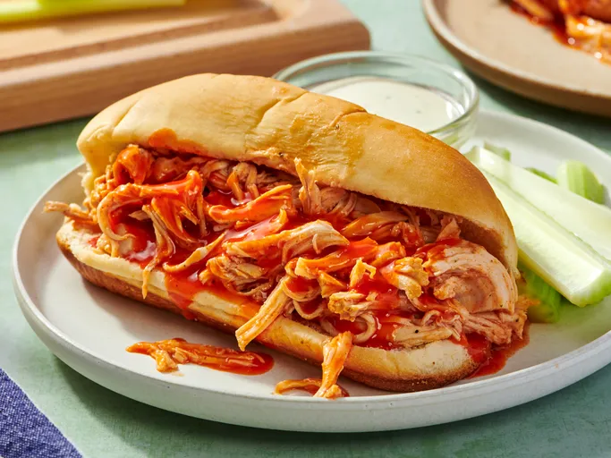

Chicken Sandwich

Description
Succulent, slow-cooked buffalo chicken that melts in your mouth. This recipe delivers a bold, tangy kick with minimal effort, making it the perfect filling for a hearty sandwich that the whole family will love.
Ingredients
A portion yields 6 servings
- 4 skinless, boneless chicken breast halves
- 1 (17.5 fluid ounce) bottle Buffalo wing sauce, divided
- ½ (1 ounce) package dry ranch salad dressing mix
- 2 tablespoons butter
- 6 hoagie rolls, split lengthwise
Directions
- Gather all ingredients.
- Place chicken breasts into the slow cooker; pour in 3/4 of the wing sauce and ranch dressing mix.
- Cover and cook on Low for 6 to 7 hours.
- Shred chicken in the cooker with two forks. Stir in butter.
- Pile shredded chicken and sauce onto hoagie rolls. Serve with remaining Buffalo sauce.
- Serve and enjoy!
Return to Home